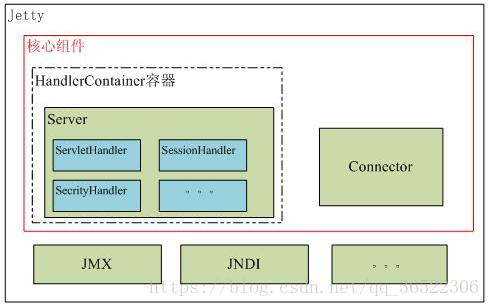

Java基础_后台服务器开发

后台服务器开发
远程通信方式
WebService平台技术
XML+XSD,SOAP和WSDL就是构成WebService平台的三大技术
XML+XSD
- WebService采用HTTP协议传输数据，采用XML格式封装数据（即XML中说明调用远程服务对象的哪个方法，传递的参数是什么，以及服务对象的返回结果是什么）。XML是WebService平台中表示数据的格式。除了易于建立和易于分析外，XML主要的优点在于它既是平台无关的，又是厂商无关的。无关性是比技术优越性更重要的：软件厂商是不会选择一个由竞争对手所发明的技术的。
- XML解决了数据表示的问题，但它没有定义一套标准的数据类型，更没有说怎么去扩展这套数据类型。例如，整形数到底代表什么？16位，32位，64位？这些细节对实现互操作性很重要。XML Schema(XSD)就是专门解决这个问题的一套标准。它定义了一套标准的数据类型，并给出了一种语言来扩展这套数据类型。WebService平台就是用XSD来作为其数据类型系统的。当你用某种语言(如VB.NET或C#)来构造一个Web service时，为了符合WebService标准，所有你使用的数据类型都必须被转换为XSD类型。你用的工具可能已经自动帮你完成了这个转换，但你很可能会根据你的需要修改一下转换过程。
SOAP
WebService通过HTTP协议发送请求和接收结果时，发送的请求内容和结果内容都采用XML格式封装，并增加了一些特定的HTTP消息头，以说明HTTP消息的内容格式，这些特定的HTTP消息头和XML内容格式就是SOAP协议。SOAP提供了标准的RPC方法来调用Web Service。
SOAP协议 = HTTP协议 + XML数据格式
SOAP协议定义了SOAP消息的格式，SOAP协议是基于HTTP协议的，SOAP也是基于XML和XSD的，XML是SOAP的数据编码方式。打个比喻：HTTP就是普通公路，XML就是中间的绿色隔离带和两边的防护栏，SOAP就是普通公路经过加隔离带和防护栏改造过的高速公路。
WSDL
好比我们去商店买东西，首先要知道商店里有什么东西可买，然后再来购买，商家的做法就是张贴广告海报。 WebService也一样，WebService客户端要调用一个WebService服务，首先要有知道这个服务的地址在哪，以及这个服务里有什么方法可以调用，所以，WebService务器端首先要通过一个WSDL文件来说明自己家里有啥服务可以对外调用，服务是什么（服务中有哪些方法，方法接受的参数是什么，返回值是什么），服务的网络地址用哪个url地址表示，服务通过什么方式来调用。
WSDL(Web Services Description Language)就是这样一个基于XML的语言，用于描述Web Service及其函数、参数和返回值。它是WebService客户端和服务器端都能理解的标准格式。因为是基于XML的，所以WSDL既是机器可阅读的，又是人可阅读的，这将是一个很大的好处。一些最新的开发工具既能根据你的Web service生成WSDL文档，又能导入WSDL文档，生成调用相应WebService的代理类代码。
- WSDL文件保存在Web服务器上，通过一个url地址就可以访问到它。客户端要调用一个WebService服务之前，要知道该服务的WSDL文件的地址。WebService服务提供商可以通过两种方式来暴露它的WSDL文件地址：1.注册到UDDI服务器，以便被人查找；2.直接告诉给客户端调用者。
常见通信协议
浅谈几种通信方式(dubbo,webservice,restful)
TCP/IP
TCP和UDP
2
udp不需要进行连接，直接把信息封装成多个报文，直接发送。所以udp的速度更快写，但是不保证数据的完整性和数据顺序(这个是可以在实现时通过验证手段来手动确定完整性)。HTTP
2
从建立连接到关闭连接的过程称为“一次连接”。SOCKET
2
但是socket并不是一定要使用tcp/ip协议，Socket编程接口在设计的时候，就希望也能适应其他的网络协议。RPC
2
在OSI网络通信模型中，RPC跨越了传输层和应用层。RPC使得开发包括网络分布式多程序在内的应用程序更加容易。SOAP
常见通信方式
Webservice
restful
dubbo
webservice之Restful风格
2
>使用restful风格发布的webservice不采用soap协议 ，轻量级 速度快，采用http传输协议。
webserver/servlet容器
相同点
- Tomcat和Jetty都是一种Servlet引擎，他们都支持标准的servlet规范和JavaEE的规范。
架构比较
- Jetty的架构比Tomcat的更为简单。
- Jetty的架构是基于Handler来实现的，主要的扩展功能都可以用Handler来实现，扩展简单。
- Tomcat的架构是基于容器设计的，进行扩展是需要了解Tomcat的整体设计结构，不易扩展。
性能比较
- Jetty和Tomcat性能方面差异不大。
- Jetty可以同时处理大量连接而且可以长时间保持连接，适合于web聊天应用等等。
- Jetty的架构简单，因此作为服务器，Jetty可以按需加载组件，减少不需要的组件，减少了服务器内存开销，从而提高服务器性能。
- Jetty默认采用NIO结束在处理I/O请求上更占优势，在处理静态资源时，性能较高。
- Tomcat适合处理少数非常繁忙的链接，也就是说链接生命周期短的话，Tomcat的总体性能更高。
- Tomcat默认采用BIO处理I/O请求，在处理静态资源时，性能较差。
其它比较
- Jetty的应用更加快速，修改简单，对新的Servlet规范的支持较好。
- Tomcat目前应用比较广泛，对JavaEE和Servlet的支持更加全面，很多特性会直接集成进来。
- Google 选择 Jetty, 放弃 Tomcat
Jetty的基本架构>
Tomcat的基本架构
不同开发实现

>
>
>
 wechat
wechat alipay
alipay